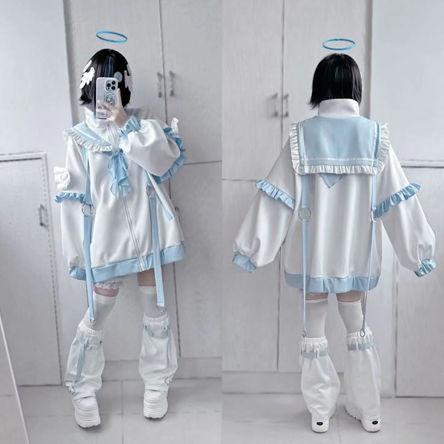
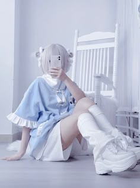

Tenshi Kaiwai (天使界隈) переводится как "сообщество ангелов" и изначально является хэштегом для рассылки фанатам онлайн-журнала Tenshi Zyoshi, который посвящен эстетике Мидзуиро. Журнал описывает свое мировоззрение как "прозрачное и эфемерное, как у ангела", и особенно популярен среди девочек-подростков. Название хэштега было выбрано журналом, чтобы выразить чувство общности среди своих поклонников. Иногда эту моду называют "Кибер-ангелкором" из-за ее связи с технологичной одеждой и кибермоделью.
Поскольку единственной отличительной чертой моды является наличие определенной цветовой гаммы, сочетающей широкий спектр синих оттенков с белым, в этом стиле нет ничего особенного. Посмотрев на хэштеги японских социальных сетей, вы увидите широкий спектр стилей, наиболее распространенными из которых являются кибер, девчачий и Ями Каваи. В Японии один из наиболее популярных образов называется Jersey Maid, но, в отличие от зарубежной интерпретации "стиля", он не ограничивается каким-либо конкретным цветом. Благодаря влиянию Mizuiro и Cyber, все большее количество эстетических элементов включает в себя визуальные элементы y2k, такие как матовые / хромированные аксессуары, веб-графику и общие интернет-образы 1990-х-2000-х годов.
 